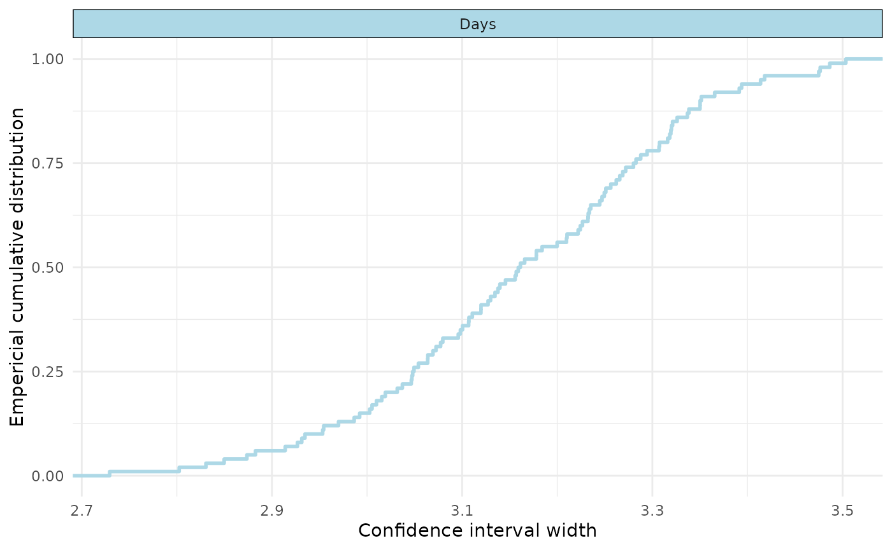
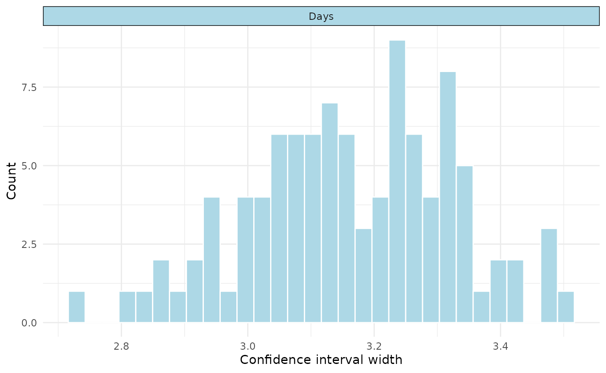

Simulate confidence interval widths at pre-specified assurance
Source:vignettes/simulate-assurance.Rmd
simulate-assurance.RmdCreate a model
We’ll use the sleepstudy data from the lme4 package, and
create a very simple model. In practice, this could be pilot data or
from another (related) study.
#get data
data_sleep <- lme4::sleepstudy
#create model
mod1 <- lme4::lmer(Reaction ~ Days + (1|Subject), data = data_sleep)Create the interval function
We then need to create a custom function that take the lme4 model as an input, and produces a data.frame with columns for ‘estimand’, ‘estimate’, ‘lower’, and ‘upper’. Here, we just do so for the beta coefficient for ‘Task’:
#define function to get interval of interest
interval_function <- function(fitted_model){
ci <- suppressMessages(confint(fitted_model))
return(
data.frame(
estimand = "Days",
estimate = lme4::fixef(fitted_model)[[2]],
lower = ci[4,1],
upper = ci[4,2]
)
)
}We can quickly test this function as follows:
interval_function(mod1)
#> estimand estimate lower upper
#> 1 Days 10.46729 8.886551 12.04802Note that in this instance we only have one estimand, but multiple estimands can be produced by adding more rows to our outputs data frame.
Other popular choices for estimands may be marginal means or pairwise
contrasts (e.g., derived from the emmeans package).
Run the simulations
We’d normally run more than 100 simulations (e.g., 5000), but for simplicity and efficiency we just run 100
#run 100 simulations for ease (should be higher for the real thing e.g., 5000)
sim1 <- precisionSim(mod1,
target_width = c(3,4,5), #different widths to test
interval_fun = interval_function, #our custom function
prob = 0.80, #assurance probability
mc_conf_level = 0.95, #monte carlo confidence level for our probability
nsim = 100, #number of simulations, usually go higher (e.g., 5000)
seed = 123) #seed
#> Registered S3 method overwritten by 'car':
#> method from
#> na.action.merMod lme4
#summary
summary(sim1)
#> Precision analysis by simulation
#> ===============================
#>
#> Model: Reaction ~ Days + (1 | Subject)
#> Simulations requested: 100
#> Target probability: 80 %
#> Monte Carlo confidence level: 95 %
#>
#> Estimand Width Assurance Monte Carlo CI
#> Days 3 15% 8.65%, 23.53%
#> Days 4 100% 96.38%, 100%
#> Days 5 100% 96.38%, 100%
#>
#> Diagnostics:
#> Failed fits: 0
#> Non-converged fits: 0
#> Singular fits: 0
#> Interval failures: 0
#>
#> Elapsed time: 231.744Visualise
We can visualise our results in two ways: 1) “assurance” which should a ecdf, and 2) “distribution” which shows a histogram of the simulated widths.
#visualise
plot(sim1, type="assurance")
plot(sim1, type="distribution")
#> `stat_bin()` using `bins = 30`. Pick better value `binwidth`.